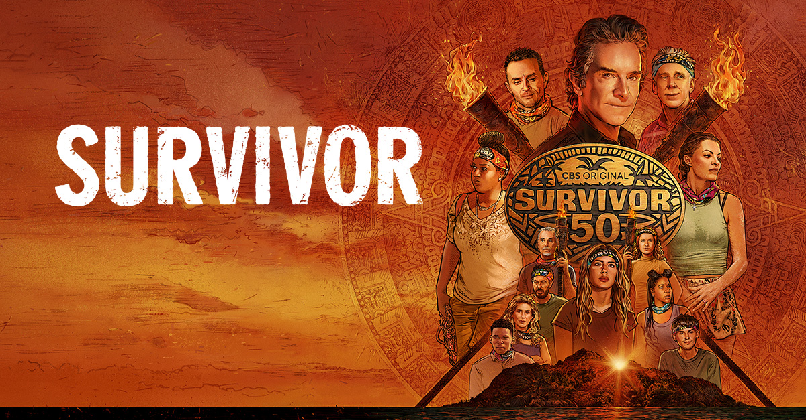
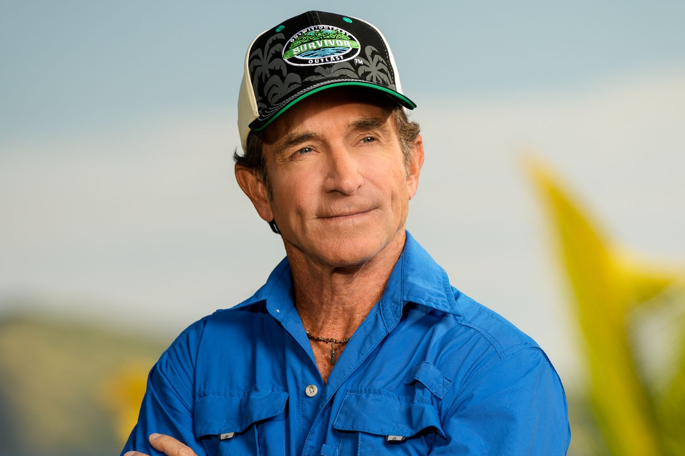

About Survivor
Survivor is a reality television show that has captivated audiences for over two decades. Contestants are stranded in remote locations and must outwit, outplay, and outlast each other to win the title of Sole Survivor and a grand prize of $1 million.
The show is known for its intense physical and mental challenges, strategic gameplay, and dramatic tribal councils. Each season brings new twists and turns, keeping viewers on the edge of their seats.
With a diverse cast of contestants and breathtaking locations, Survivor continues to be a fan favorite and a staple of reality television. Think you have what it takes to be a Survivor Legend? The only way to find out - Apply to be on Survivor!

About The Host
Jeff Probst has been the host of Survivor since its inception in 2000. Known for his charismatic personality and insightful commentary, Jeff has become an integral part of the show's success.
Throughout the years, Jeff has witnessed countless memorable moments, from shocking blindsides to heartwarming alliances. His ability to connect with contestants and viewers alike has made him a beloved figure in the world of reality television.
As the face of Survivor, Jeff Probst continues to guide contestants through the challenges and drama of the game, ensuring that each season is filled with excitement and suspense. His dedication to the show and its contestants has solidified his place as one of the most iconic hosts in television history.